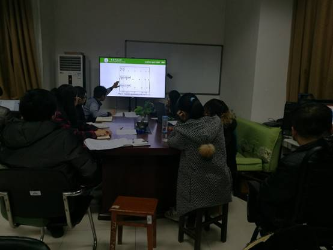
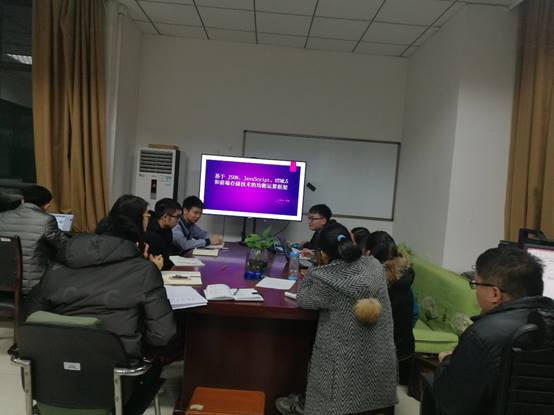

计算与软件工程技术实验室：开展2018实验室首次学术例会
2018年1月7日晚七点，计算与软件工程技术实验室组织开展了2018年的首次学术例会。该实验室全体同学全员均参加了本次例会。
本次例会由黄俊老师主持，分为两大部分，会议之初，由各位研究生同学总结本周所学所得；此外，由唐怡和罗斐两位同学做学术分享；在分享过程期间大家踊跃提问解疑、讨论研究，营造了良好的学习氛围。
首先是唐怡同学给大家分享，它分享的是期刊：JOURNAL OF GUIDANCE, CONTROL, AND DYNAMICS上的一篇文“Convergence of the Costates Does Not Imply Convergence of the Control ”，主要讲的是基于勒让德维普法的最优控制收敛问题, 利用反例证明在最优控制中协态收敛并不意味着控制收敛。并与黄俊老师进行深入的讨论与交流。

随后罗斐通过给大家分享了“基于JSON、JavaScript、HTML5和前端存储技术的均衡运算框架“。主要内容是对影响网站运行主要性能开销的页面动态生成和数据库访问操作进行分析，针对传统技术处理的局限，提出了一个低成本，由服务器和浏览器均衡运算的技术框架，并通过实验证明使用此框架开发的web应用比之传统框架，其应用性能有了大幅提升。
在分享过程中，大家还对如何搜索论文发表了各自的看法。

据悉，从实验室建立开始，该实验室就将学术例会作为常规动作，每周安排不同的学生针对各自研究专业知识进行分享，使每个同学均能投入其中，巩固其学习成果，了解新知识。
2018，相信在刘志勤老师的指导下，黎茂锋、黄俊、王庆凤等老师的带领下，实验室学生将在计算与软件工程的道路上不断努力、不断前行，再接再厉，共创辉煌!